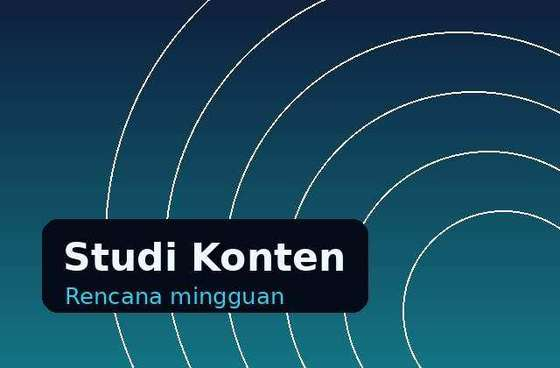
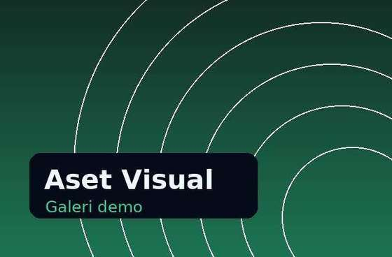
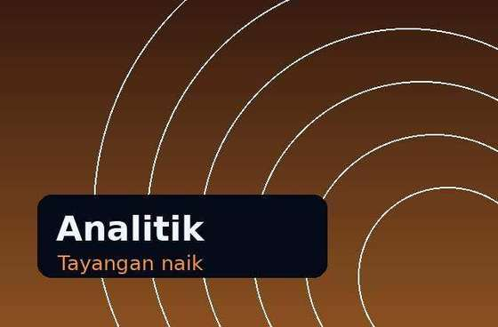

Panduan mingguan · 6 menit baca
Tujuh ide konten yang bisa dipanen dari satu halaman studio
Halaman demo ini disimpan di dalam extension, jadi kamu bisa mencoba panen gambar, teks, tabel, dan otomasi tanpa membuka situs lain atau mengirim data ke mana pun.
Alur kerjanya sederhana: rekam aset dari halaman, simpan ke perpustakaan Data, lalu olah menjadi ide, naskah, jadwal tayang, dan laporan performa di panel lain.
- Ide konten 1: rutinitas pagi kreator dalam 45 detik
- Ide konten 2: di balik layar setup kamera dan lampu
- Ide konten 3: tiga konten pendek dari satu sesi rekaman



Tabel di bawah merangkum contoh performa tiga konten terakhir. Angka ini fiktif dan hanya dipakai untuk latihan membaca data di panel Analitik.
| Konten | Platform | Tayangan | Interaksi |
|---|---|---|---|
| Rutinitas pagi | 18.400 | 1.240 | |
| Di balik layar | TikTok | 42.900 | 3.870 |
| Tiga klip satu sesi | YouTube | 12.150 | 960 |
Setelah panen demo berhasil, buka panel Data untuk melihat galeri gambar, potongan teks, dan tabel yang tersimpan. Dari sana kamu bisa mengekspor berkas atau mengirim ringkasan ke platform.